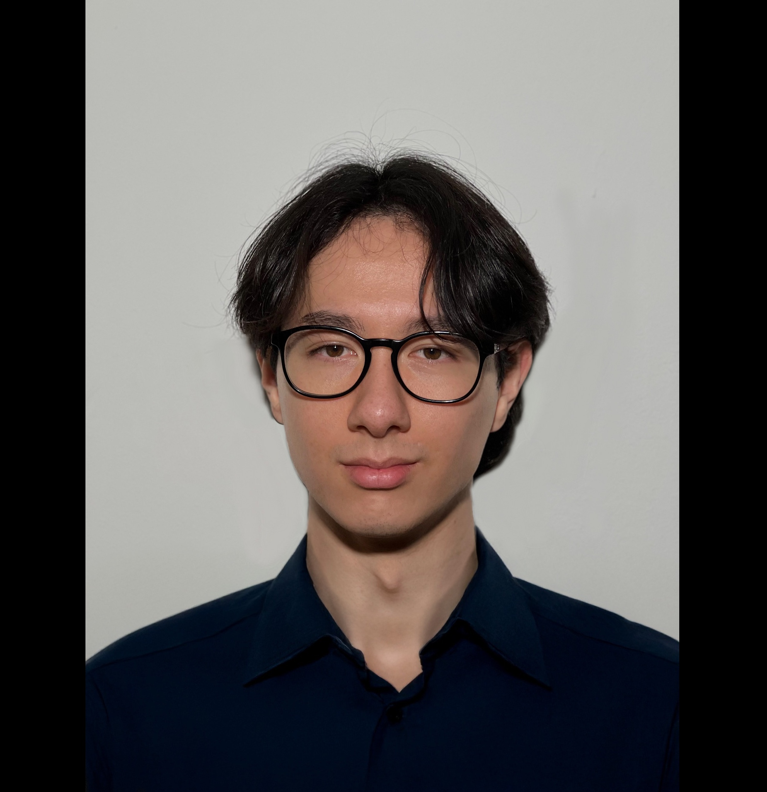

Alexander Angerer
22‑jähriger Masterstudent im Studiengang Computer Engineering an der TU Wien. Begeistert von Technik, Kommunikation und datengetriebener Problemlösung.
Projekte
Dekantiermaschine (Abschlussarbeit)
Als Abschlussprojekt an der HTL Bregenz entwickelte ich mit meinem Team eine Dekantiermaschine für Magnumflaschen. Wir legten großen Wert auf eine professionelle Arbeitsplanung und Aufgabenteilung, ein schlichtes, edles Design und eine einfache Handhabung. Das Projekt ermöglichte uns, wertvolle Erfahrungen zu sammeln und zeigte, wie wichtig klare Kommunikation im Team ist.
Tutoring & Mentoring
Ich biete Nachhilfe in Englisch, Mathematik und Physik. Meine Unterrichtsphilosophie basiert auf Verständnis, Geduld und dem Aufbau einer vertrauensvollen Beziehung. Ziel ist es, komplexe Inhalte klar und zugänglich zu vermitteln und lebensnahe Fähigkeiten zu fördern.
Kommunikation & Teamarbeit
In internationalen Teams aus Ingenieur:innen und Physiker:innen habe ich gelernt, komplexe Konzepte strukturiert zu vermitteln. Als Problemlöser gehe ich Herausforderungen systematisch an, um die Ursachen von Schwierigkeiten aufzuspüren und nachhaltige Lösungen zu entwickeln.
Erfahrung
Werkstudent – Siemens Healthineers AG
11/2023 – 04/2024: Entwicklung von Tooling für agiles Softwareprojektmanagement im Bereich Forschung & Entwicklung. Schwerpunkte lagen auf der Programmierung mit MS Excel VBA und der Integration in MS Azure DevOps.
Dualer Student – Brose Fahrzeugteile (Bamberg)
10/2020 – 09/2023: Mitarbeit in der Software‑ und Hardware‑Entwicklung. Überführung von Softwaretests in Python, Schreiben von Unit‑Tests mit Pytest sowie Evaluierung von Galliumnitrid HEMTs als innovative Alternative zu Silizium‑MOSFETs mittels Doppelpulstests.
Ausbildung
Master Computer Engineering – Technische Universität Wien
04/2024 – 03/2026: Vertiefungen in Cyber‑Physical Systems, Dependable Distributed Systems und Digital Circuits and Systems.
Akademiestudium – Fernuniversität Hagen
10/2023 – 03/2024
Bachelor Elektrotechnik – Duale Hochschule Baden‑Württemberg (Campus Friedrichshafen)
10/2020 – 09/2023: Studienrichtung Fahrzeugelektronik. Bachelorarbeit: Evaluierung von Galliumnitrid High‑Electron‑Mobility‑Transistoren im praktischen Vergleich zu Silizium‑MOSFETs.
HTL Bregenz
Abschlussprojekt: Entwicklung einer Dekantiermaschine für Magnumflaschen mit Fokus auf professionelle Arbeitsplanung und elegantes Design.
Kenntnisse
Sprachen: Deutsch (Muttersprache), Englisch (verhandlungssicher), Französisch (Grundkenntnisse)
Software & Tools: MS Office, MS Excel VBA, MS Azure DevOps, C/C++, Python
Betriebssysteme: Windows, macOS, Linux
Interessen
Künstliche Intelligenz, Microcontroller‑Projekte (Raspberry Pi, STM32, ESP32), Kraftsport, Schwimmen, Klavierspielen, Unternehmerschaft.
Über mich
Als datengetriebener Problemlöser lege ich Wert auf klare Kommunikation, Teamarbeit und kontinuierliche Weiterentwicklung. Die Verbindung von Elektrotechnik und Informatik ermöglicht es mir, komplexe technische Themen verständlich aufzubereiten und in praktischen Projekten umzusetzen. In meiner Freizeit fördere ich diese Vielfalt durch Musik, Sport und kreative Hobby‑Projekte – so entstehen neue Ideen und Perspektiven, die ich sowohl in der universitären Forschung als auch in meinem Mentoring einbringe.